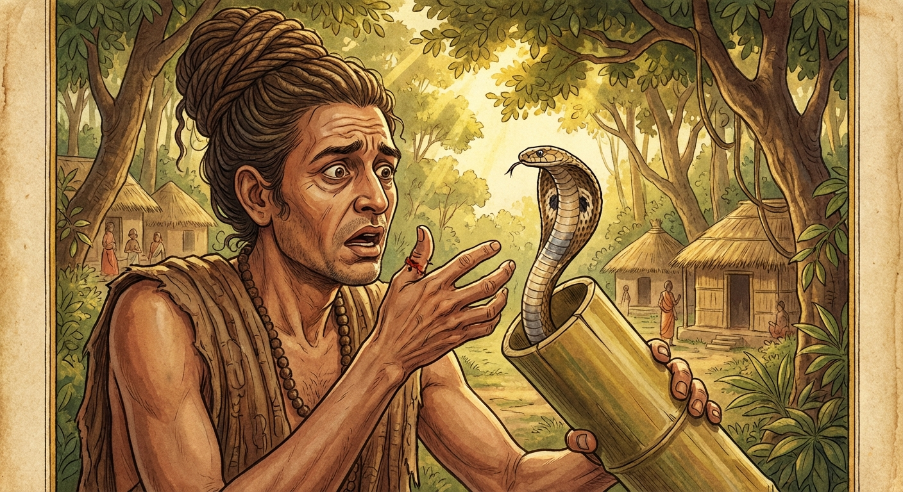

3. වේළුක ජාතකය (43)
“යො අත්ථකාමස්ස” යනාදී වශයෙන් එන මේ ජාතක කථාව බුදුරජාණන් වහන්සේ ජේතවනාරාමයේ වැඩ වසන සමයෙහි එක්තරා අකීකරු භික්ෂුවක් අරබයා දේශනා කළ සේක. භාග්යවතුන් වහන්සේ ඔහුගෙන් “මහණ, ඔබ අකීකරු අයෙකිය යනු සැබෑදැ?” යි විමසා, “එසේය ස්වාමීනි, සත්යයකි” යි කී කල්හි; “මහණ, ඔබ දැන් පමණක් නොව පෙරත් අකීකරු අයෙකි. ඒ අකීකරු බව නිසාම නුවණැත්තන්ගේ අවවාද නොපිළිගෙන සර්පයකුගේ මුවට අසුව ජීවිත විනාශයට පත් විය” යැයි වදාරා අතීත කථාව ගෙනහැර දැක්වූ සේක.
අතීතයේ බරණැස් නුවර බ්රහ්මදත්ත රජු රාජ්ය කරන කල්හි බෝධිසත්ත්වයන් වහන්සේ කාසි රට මහා ධනවත් කුලයක උපන්හ. උන්වහන්සේ වැඩිවියට පැමිණ නුවණ මෝරන කල්හි කාමයන්හි ආදීනව ද, නෛෂ්ක්රම්යයේ (ගිහි ගෙයින් නික්මීමේ) අනුසස් ද දැක, පස්කම් සැප අතහැර හිමාලයට පිවිස තාපස පැවිද්දෙන් පැවිදි වූහ. අනතුරුව කසිණ භාවනා කොට පඤ්ච අභිඥා හා අෂ්ට සමාපත්ති උපදවා ධ්යාන සුවයෙන් කල් ගෙවූ අතර, පසු කලෙක පන්සියයක් තාපසයන් පිරිවරා ගණ ශාස්තෘවරයෙකු වී වාසය කළහ. ඉක්බිති එක් විෂ සහිත සර්ප පැටවෙක් තමන්ගේ ස්වභාවය පරිදි හැසිරෙන්නේ එක්තරා තාපසයෙකුගේ ආශ්රමයට පැමිණියේය. ඒ තාපසයා ඌ කෙරෙහි දරු සෙනෙහස උපදවා, එක් උණ පුරුකක් තුළ නිදි කරවා පෝෂණය කළේය. ඌ උණ පුරුකේ නිදන බැවින් “වේළුක” (උණ බම්බුවා) යැයි නමක් තැබුවේය. ඌට දරු සෙනෙහසින් සාත්තු සප්පායම් කරන නිසා තාපසයාට “වේළුක පියා” යැයි නමක් පටබැඳුණි.
එකල්හි බෝධිසත්ත්වයන් වහන්සේ “එක් තාපසයෙක් සර්පයෙකු ඇති දැඩි කරයි” යන්න අසා ඔහු කැඳවා, “ඔබ සර්පයෙකු පෝෂණය කරන බව සැබෑදැ?” යි විමසා, “එසේය” යි කී කල්හි; “විෂඝෝර සර්පයෙකු සමඟ විශ්වාසයක් නම් තැබිය නොහැක. මෙලෙස ඌව ආරක්ෂා නොකරන්න” යැයි අවවාද කළහ. එවිට තාපසයා “ආචාර්යයන් වහන්ස, ඔහු මගේ පුතා ය. ඔහුගෙන් වෙන්ව මට ජීවත් විය නොහැක” යැයි පැවසීය. “එසේ නම් ඌ නිසාම ඔබ ජීවිත විනාශයට පත් වනු ඇතැ” යි බෝසතාණෝ කීහ. තාපසයා බෝධිසත්ත්වයන්ගේ වචනය නොපිළිගත්තේය. සර්පයා අත්හැරීමට ද නොහැකි විය. ඉක්බිති දින කිහිපයකට පසු සියලු තාපසයෝ පලවැල නෙළීම සඳහා ගියහ. ගිය තැන පලවැල සුලබ බව දැක දෙතුන් දිනක් එහිම නතර වූහ. වේළුක පියා ද ඔවුන් සමඟ ගිය අතර සර්පයා උණ පුරුකෙහිම නිදි කරවා, එහි කට වසා දමා ගියේය. හෙතෙම නැවත තාපසයන් සමඟ දෙතුන් දිනකට පසු පැමිණ “වේළුකට ගොදුරු දෙමි” යි සිතා උණ පුරුක විවෘත කොට, “පුතේ එන්න, ඔබට බඩගිනි ඇතැ” යි කියමින් අත දිගු කළේය. සර්පයා දින දෙක තුනක් නිරාහාරව සිටි බැවින් කිපී, දිගු කළ අතට දෂ්ට කොට තාපසයා එම ස්ථානයේදීම ජීවිතක්ෂයට පමුණුවා කැලයට වැදුණේය. තාපසයෝ ඔහු මළ බව දැක බෝධිසත්ත්වයන් වහන්සේට දැන්වූහ. බෝසතාණෝ ඔහුගේ අවසන් කටයුතු කරවා තාපස පිරිස මැද හිඳ අවවාද වශයෙන් මෙම ගාථාව වදාළහ.

“යහපත කැමති වූ ද, හිතවත් ව අනුකම්පා කරන්නා වූ ද උතුමන් විසින් අවවාද දෙනු ලබන විට යමෙක් එය නොපිළිගනී ද, හෙතෙම වේළුක නම් සර්පයාගේ පියා යම් සේ විනාශ වූයේ ද, එපරිද්දෙන් මරණයට පත්ව ශෝක කිරීමට සිදුවේ.”
එහි “එවං සො නිහතො සෙති” යන්නෙන් අදහස් කරන්නේ, යමෙක් ඍෂිවරුන්ගේ අවවාද නොපිළිගනී ද, හෙතෙම යම් සේ මේ තාපසයා විෂඝෝර සර්පයාගේ දෂ්ට කිරීමෙන් මරණයට පත් වූයේ ද, එලෙසින්ම මහා විනාශයට පත්ව මරණයට පත්වන බවයි. මෙසේ බෝධිසත්ත්වයන් වහන්සේ තාපස සමූහයාට අවවාද දී සතර බ්රහ්ම විහරණ වඩා ආයු කෙළවර බ්රහ්ම ලෝකයේ උපන්හ.
බුදුරජාණන් වහන්සේ, “මහණ, ඔබ දුර්වච වූයේ දැන් පමණක් නොව පෙරත් දුර්වචව සිටියේය. ඒ අකීකරුකම නිසාම සර්පයා දෂ්ට කොට විනාශයට පැමිණියේය” යැයි මේ ධර්ම දේශනාව ගෙනහැර දක්වා පූර්වාපර සන්ධි ගළපා ජාතක කථාව සමාප්ත කළ සේක. “එකල වේළුක පියා වූයේ මේ දුර්වච භික්ෂුවයි. සෙසු පිරිස බුදු පිරිසයි. පිරිස් නායකව සිටියේ මම ම වෙමි” යි වදාළ සේක.
වේළුක ජාතක වර්ණනාව නිමා විය. (තුන්වැනියි)